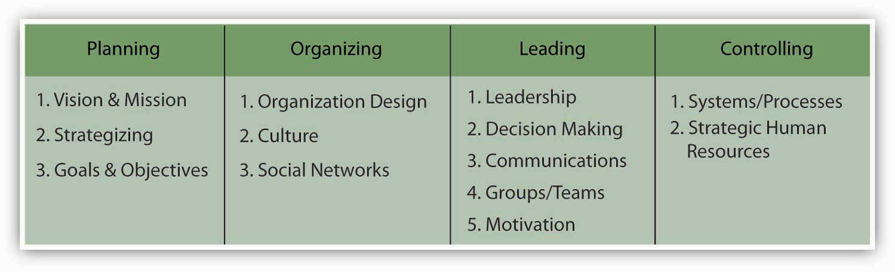

Reading this chapter will help you do the following:
Figure 13.2 The P-O-L-C Framework
Groups and teams are ubiquitous on the organizational landscape and managers will find that team management skills are required within each of the planning-organizing-leading-controlling (P-O-L-C) functions. For instance, planning may often occur in teams, particularly in less centralized organizations or toward the higher levels of the firm. When making decisions about the structure of the firm and individual jobs, managers conducting their organizing function must determine how teams will be used within the organization. Teams and groups have implications for the controlling function because teams require different performance assessments and rewards. Finally, teams and groups are a facet of the leading function. Today’s managers must be both good team members and good team leaders. Managing groups and teams is a key component of leadership.
In your personal life, you probably already belong to various groups such as the group of students in your management class; you may also belong to teams, such as an athletic team or a musical ensemble. In your career, you will undoubtedly be called on to be part of, and mostly likely to manage, groups and teams.